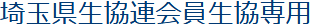

2019年度会員生協概況調査へのご協力のお願い
例年お願いしておりますが、埼玉県生協連の会費額算定や総会資料作成に必要な数値などを確認するため、概況調査を実施します。また、今年度からは、会員生協の事業高だけではなく、各生協の多様な事業の規模感や特徴、行政との関わり、社会貢献活動や組合員活動などの数値や特徴を把握し、埼玉県議会各会派との懇談などの場をはじめ、生協への理解を広げるために活用させていただきます。その分、集約項目が増加しており、ご負担をおかけしますが、なにとぞご協力をお願いします。
なお、誠に勝手ではございますが、提出の締切りを4月24日(金)までとさせていただきます。FAX、Eメールなどでご返信ください(電子データも別途発信いたしますので、ご活用ください)。
引き続き、委員登録のお願いなど5月にかけて、お願いすることが続きますが、ご協力をお願いいたします。
記
1.全会員生協へのお願い
- (1) 別紙1に、各生協の事業年度末の数字をご記入ください。
- (2) 別紙2に、先日ご提出いただいた「単協報告一次集約用紙」から加筆修正が必要な場合はご記入をお願いします。なお、ご記入いただきました文章は、第49回総会資料「2019年度会員生協の取り組み」として議案書に記載させていただきます。ご承知おきください。参考までに、一次集約と第48回通常総会議案書に掲載したものを添付します。ご確認ください。
- (3) 別紙3に、各生協の様々な取り組みに関する数値、取り組み内容をご記入ください。
2.コープみらい・パルシステム埼玉・生活クラブ・埼玉県勤労者生協・医療生協さいたまへのお願い
- (1) 別紙4に、自治体別組合員数を記入してください。
- (2) 単協独自に作成している市町村別の組合員数を表す資料などあれば、その資料送っていただいても結構です。
- 2019年度第2次単協概況調査(別紙1、別紙2)【WORD 24.1KB】
- 各生協活動集約(別紙3)【WORD 22.2KB】
- 自治体別組合員数調査(別紙4)【PDF 220KB】
- コープみらい用2019年度第2次単協概況調査(別紙1・別紙2）【WORD 24.7KB】
この件に関しましては、埼玉県生協連の加藤・倉内が担当します。
電話 048-844-8971 FAX 048-844-8973
- Eメール
- 加藤 k.katou@saitama-k.com
倉内 t.kurauchi@saitama-k.com